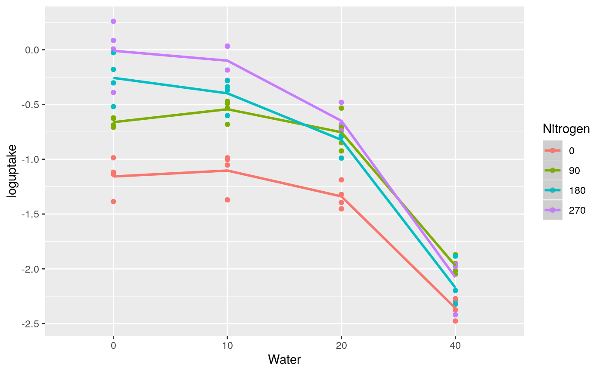
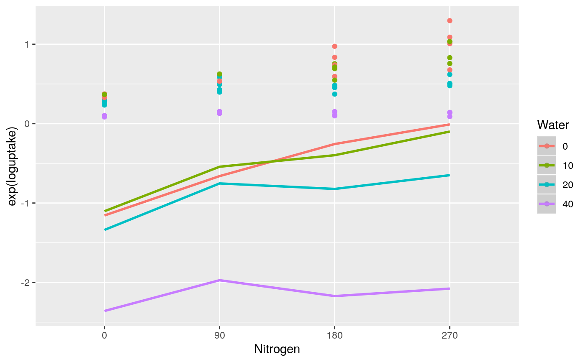

Example 3: Polynomial regression model with two quantitative level treatment factors
example3.Rd(Gomez & Gomez, 1984, p. 401) report a two-factor nitrogen uptake greenhouse experiment on rice involving duration of water stress (W) and level of nitrogen application (N) with four complete replicates of each treatment. The experiment had four water-stress levels (0, 10, 20 and 40 days) applied as main-plot treatments and four nitrogen rates (0, 90, 180 and 270 kg/ha) applied as sub-plot treatments. The four sub-plot treatments were randomized within main plots and the four main plot treatments were randomized within complete replicate blocks.
Details
The first stage of the analysis is the calculation of polynomial powers of N and W using the poly() function. The N rates are re-scaled by division by 100 while the W rates are re-scaled by division by 10.
The second stage shows a Pearson residual plot of the untransformed N uptake data versus a Pearson residual plot of the log transformed N uptake data. Comparison of the two plots shows that the untransformed residuals increase as the fitted values increase whereas the log transformed N uptake residuals are approximately constant over the full range of the fitted values. This shows that a log transformation of the N uptake data gives a dependent variate with constant variance over the full range of fitted values which shows that a simple unweighted analysis of variance is valid for the effects of the treatment factors.
Sometimes the original scale of measurement is the proper scale of measurement for an analysis, e.g. an analysis of actual measured crop yields, and then it might be appropriate to fit a weighted analysis of variance in the original scale of measurement of the dependent variable (see Faraway 2002 Chapter 5). However, the log transformation model assumes a proportional rather than an additive model for treatment effects and, in this example, a proportional model for nitrogen uptake may well be a more natural physiological model than a simple additive model.
The next stage compares the fit of a first-order linear model (Table 9) versus a second-order quadratic model (Table 10). The first-order model shows significant lack-of-fit and is not adequate for the data. The second-order model is also not fully adequate for the data as there is a significant N lack of fit term indicating a significant cubic effect. However, the magnitude of the cubic effect is relatively small and it will be assumed here that a quadratic model is adequate for the data.
The final stage fits regression coefficients for the quadratic response surface model on the re-scaled water stress and re-scaled nitrogen rate treatments. The fitted coefficients are then used to plot the fitted quadratic log uptake curves versus the nitrogen rate treatments and the water stress treatments, as shown in Fig 4.
Note that in this analysis all the polynomial models are built by adding individual polynomial effects in accordance with the requirements of functional marginality.
agriTutorial: return to home page if you want to select a different example
References
Faraway J (2002) Practical Regression and Anova using R. https://cran.r-project.org/doc/contrib/Faraway-PRA.pdf
Gomez, K.A., & Gomez, A.A. (1984). Statistical procedures for agricultural research, 2nd edn. New York: Wiley.
Piepho, H. P, and Edmondson. R. N. (2018). A tutorial on the statistical analysis of factorial experiments with qualitative and quantitative treatment factor levels. Journal of Agronomy and Crop Science. DOI: 10.1111/jac.12267. Early View
Examples
## ************************************************************************************* ## How to run the code ## ************************************************************************************* ## Either type example("example3") to run ALL the examples succesively ## or copy and paste examples sucessively, as required ## ************************************************************************************* ## Options and required packages ## ************************************************************************************* require(lmerTest) require(lattice)#>require(pbkrtest) options(contrasts = c('contr.treatment', 'contr.poly')) ## ************************************************************************************* ## Section 1: Polynomial powers of N and W ## ************************************************************************************* greenrice$loguptake = log(greenrice$uptake) greenrice$Nitrogen = factor(greenrice$N) greenrice$Water = factor(greenrice$W) PolW = poly((greenrice$W/10), degree = 2, raw = TRUE) colnames(PolW) = c("Linear_W", "Quadratic_W") PolN = poly((greenrice$N/100), degree = 2, raw = TRUE) colnames(PolN) = c("Linear_N", "Quadratic_N") greenrice = cbind(greenrice, PolW, PolN) ## residual plot of untransformed N uptake data greenrice.uptake = lmer(uptake ~ Replicate + factor(N) * factor(W) + (1|Replicate:Main), data = greenrice) plot(greenrice.uptake, main = "Pearson residual plot for untransformed N uptake", ylab = "Residuals N uptake")## residual plot of log transformed N uptake data greenrice.loguptake = lmer(loguptake ~ Replicate + factor(N) * factor(W) + (1|Replicate:Main), data = greenrice) plot(greenrice.loguptake, main = "Pearson residual plot for log transformed N uptake", ylab = "Residuals log N uptake")## Table 9: first-order model of log uptake with Wald tests greenrice.lmer1 = lmer(loguptake ~ Linear_N + Linear_W + Nitrogen * Water + (1|Replicate) + (1|Replicate:Main), data = greenrice)#>anova(greenrice.lmer1, ddf = "Kenward-Roger", type = 1)#> Type I Analysis of Variance Table with Kenward-Roger's method #> Sum Sq Mean Sq NumDF DenDF F value Pr(>F) #> Linear_N 4.6529 4.6529 1 36 183.8071 1.033e-15 *** #> Linear_W 25.5240 25.5240 1 9 1008.2989 1.496e-10 *** #> Nitrogen 0.6297 0.3148 2 36 12.4375 7.826e-05 *** #> Water 2.7392 1.3696 2 9 54.1047 9.633e-06 *** #> Nitrogen:Water 1.3181 0.1465 9 36 5.7856 5.878e-05 *** #> --- #> Signif. codes: 0 ‘***’ 0.001 ‘**’ 0.01 ‘*’ 0.05 ‘.’ 0.1 ‘ ’ 1## Table 10: second-order model of log uptake with Wald tests greenrice.lmer2 = lmer(loguptake ~ Linear_N * Linear_W + Quadratic_N + Quadratic_W + Nitrogen * Water + (1|Replicate) + (1|Replicate:Main), data = greenrice)#>anova(greenrice.lmer2, ddf = "Kenward-Roger", type = 1)#> Type I Analysis of Variance Table with Kenward-Roger's method #> Sum Sq Mean Sq NumDF DenDF F value Pr(>F) #> Linear_N 4.6529 4.6529 1 36 183.8071 1.033e-15 *** #> Linear_W 25.5240 25.5240 1 9 1008.2989 1.496e-10 *** #> Quadratic_N 0.3695 0.3695 1 36 14.5956 0.0005074 *** #> Quadratic_W 2.7061 2.7061 1 9 106.9031 2.708e-06 *** #> Nitrogen 0.2602 0.2602 1 36 10.2793 0.0028202 ** #> Water 0.0331 0.0331 1 9 1.3062 0.2825677 #> Linear_N:Linear_W 1.1667 1.1667 1 36 46.0909 6.219e-08 *** #> Nitrogen:Water 0.1514 0.0189 8 36 0.7474 0.6498072 #> --- #> Signif. codes: 0 ‘***’ 0.001 ‘**’ 0.01 ‘*’ 0.05 ‘.’ 0.1 ‘ ’ 1## ************************************************************************************* ## Section 2 : Fitted regression models and quadratic log uptake curves ## *************************************************************************************## Regression coefficients of quadratic response model of W and N greenrice.lmer0 = lmer(loguptake ~ Linear_N * Linear_W + Quadratic_N + Quadratic_W + (1|Replicate) + (1|Replicate:Main), data = greenrice) summary(greenrice.lmer0, ddf = "Kenward-Roger", type = 1)#> Warning: additional arguments ignored#> Linear mixed model fit by REML. t-tests use Kenward-Roger's method [ #> lmerModLmerTest] #> Formula: loguptake ~ Linear_N * Linear_W + Quadratic_N + Quadratic_W + #> (1 | Replicate) + (1 | Replicate:Main) #> Data: greenrice #> #> REML criterion at convergence: -13.7 #> #> Scaled residuals: #> Min 1Q Median 3Q Max #> -2.26402 -0.54435 0.02556 0.69423 2.14818 #> #> Random effects: #> Groups Name Variance Std.Dev. #> Replicate:Main (Intercept) 0.000e+00 0.000000 #> Replicate (Intercept) 8.815e-05 0.009389 #> Residual 2.880e-02 0.169693 #> Number of obs: 64, groups: Replicate:Main, 16; Replicate, 4 #> #> Fixed effects: #> Estimate Std. Error df t value Pr(>|t|) #> (Intercept) -1.16000 0.06378 47.80633 -18.187 < 2e-16 *** #> Linear_N 0.68000 0.07788 45.00000 8.731 3.05e-11 *** #> Linear_W 0.17603 0.05507 12.91860 3.196 0.007067 ** #> Quadratic_N -0.09380 0.02619 45.00000 -3.582 0.000833 *** #> Quadratic_W -0.11599 0.01196 10.00000 -9.694 2.11e-06 *** #> Linear_N:Linear_W -0.09072 0.01425 45.00000 -6.365 8.94e-08 *** #> --- #> Signif. codes: 0 ‘***’ 0.001 ‘**’ 0.01 ‘*’ 0.05 ‘.’ 0.1 ‘ ’ 1 #> #> Correlation of Fixed Effects: #> (Intr) Linr_N Linr_W Qdrt_N Qdrt_W #> Linear_N -0.592 #> Linear_W -0.625 0.112 #> Quadratic_N 0.333 -0.908 0.000 #> Quadratic_W 0.375 0.000 -0.900 0.000 #> Lnr_N:Lnr_W 0.528 -0.320 -0.349 0.000 0.000## Fig 4a fitted quadratic loguptake curve versus water stress treatments panel.plot = function(x, y) { panel.xyplot(x, y) # shows observed points Nitrogen = c(0, .90, 1.80, 2.70)[panel.number()] panel.curve(-1.16 + 0.17603 * x - 0.11599 * x * x + 0.68 * Nitrogen - 0.0938 * Nitrogen * Nitrogen - 0.09072 * x * Nitrogen, from = 0, to = 4.0, type = "l", lwd = 2) } xyplot(loguptake ~ Linear_W|factor(Linear_N), data = greenrice, scales = list(x = list(at = c(0, 1, 2, 4), labels = c(0, 10, 20, 40))), main = "Fig 4a: logN uptake versus water stress", xlab = " Water stress (days)", ylab = "Log nitrogen uptake (g/pot)", strip = strip.custom(strip.names = TRUE, factor.levels = c("0", "90", "180", "270")), panel = panel.plot)## Fig 4b fitted quadratic quadratic loguptake curve versus nitrogen rate treatments panel.plot = function(x, y) { panel.xyplot(x, y) # shows observed points Water = c(0, 1.0, 2.0, 4.0)[panel.number()] panel.curve( -1.16 + 0.17603 * Water - 0.11599 * Water * Water + 0.68 * x - 0.0938 * x * x - 0.09072 * Water * x , from = 0, to = 2.70, type = "l", lwd = 2) } xyplot(loguptake ~ Linear_N|factor(Linear_W), data = greenrice, scales = list(x = list(at = c(0, .9, 1.8, 2.7), labels = c(0, 90, 180, 270))), main = "Fig 4b: logN uptake versus nitrogen rate", xlab = "Nitrogen (kg/ha)", ylab = "Log nitrogen uptake (g/pot)", strip = strip.custom(strip.names = TRUE, factor.levels = c("0", "10", "20", "40")), panel = panel.plot)## Fig 4a backtransformed quadratic loguptake curve versus water stress treatments panel.plot = function(x, y) { panel.xyplot(x, y) # shows observed points Nitrogen = c(0, .90, 1.80, 2.70)[panel.number()] panel.curve( exp(-1.16 + 0.17603 * x - 0.11599 * x * x + 0.68 * Nitrogen - 0.0938 * Nitrogen * Nitrogen - 0.09072 * x * Nitrogen), from = 0, to = 4.0, type = "l", lwd = 2) } xyplot(uptake ~ Linear_W|factor(Linear_N), data = greenrice, scales = list(x = list(at = c(0, 1, 2, 4), labels = c(0, 10, 20, 40))), main = "Fig 4a: Back transformed N uptake versus water stress", xlab = " Water stress (days)", ylab = "Nitrogen uptake (g/pot)", strip = strip.custom(strip.names = TRUE, factor.levels = c("0", "90", "180", "270")), panel = panel.plot)## Fig 4b back transformed quadratic loguptake curve versus nitrogen rate treatments panel.plot = function(x, y) { panel.xyplot(x, y) # shows observed points Water = c(0, 1.0, 2.0, 4.0)[panel.number()] panel.curve(exp(-1.16 + 0.17603 * Water - 0.11599 * Water * Water + 0.68 * x - 0.0938 * x * x - 0.09072 * Water * x), from = 0, to = 2.70, type = "l", lwd = 2) } xyplot(uptake ~ Linear_N|factor(Linear_W), data = greenrice, scales = list(x = list(at = c(0, .9, 1.8, 2.7), labels = c(0, 90, 180, 270))), main = "Fig 4b: Back transformed N uptake versus nitrogen rate", xlab = "Nitrogen (kg/ha)", ylab = "Nitrogen uptake (g/pot)", strip = strip.custom(strip.names = TRUE, factor.levels = c("0", "10", "20", "40")), panel = panel.plot)